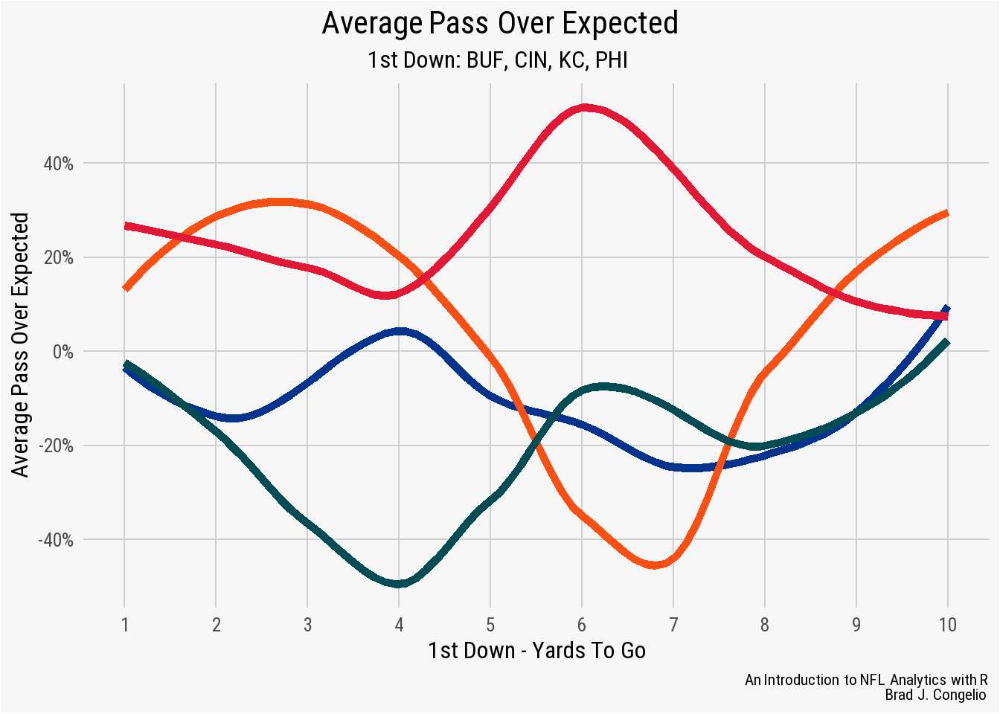

Appendix A — NFL Analytics Quick Reference Guide
A.1 Air Yards
Air yards is the measure that the ball travels through the air, from the line of scrimmage, to the exact point where the wide receivers catches, or does not catch, the football. It does not take into consideration the amount of yardage gained after the catch by the wide receiver (which would be yards after catch).
For an example, please see the below illustration. In it, the line of scrimmage is at the 20-yardline. The QB completes a pass that is caught at midfield (the 50-yardline). After catching the football, the wide receiver is able to advance the ball down to the opposing 30-yardline before getting tackled. First and foremost, the quarterback is credited with a total of 50 passing yards on the play, while the wide receiver is credited with the same.
However, because air yards is a better metric to explore a QB’s true impact on a play, he is credited with 30 air yards while the wide receiver is credited with 20 yards after catch.
In the end, quarterbacks with higher air yards per attempt are generally assumed to be throwing the ball deeper downfield than QBs with lower air yards per attempt.
There are multiple ways to collect data pertaining to air yards. However, the most straightforward way is to use load_player_stats:
data <- nflreadr::load_player_stats(2021)
air.yards <- data %>%
filter(season_type == "REG") %>%
group_by(player_id) %>%
summarize(
attempts = sum(attempts),
name = first(player_name),
air.yards = sum(passing_air_yards),
avg.ay = mean(passing_air_yards)) %>%
filter(attempts >= 100) %>%
select(name, air.yards, avg.ay) %>%
arrange(-air.yards)
air.yards# A tibble: 42 x 3
name air.yards avg.ay
<chr> <dbl> <dbl>
1 T.Brady 5821 342.
2 J.Allen 5295 311.
3 M.Stafford 5094 300.
4 D.Carr 5084 299.
5 J.Herbert 5069 298.
6 P.Mahomes 4825 284.
7 T.Lawrence 4732 278.
8 D.Prescott 4612 288.
9 K.Cousins 4575 286.
10 J.Burrow 4225 264.
# i 32 more rowsIn the above example, we can see that Tom Brady led the NFL during the 2021 regular season with a comined total of 5,821 air yards which works out to an average of 342 air yards per game.
A.3 Average Cushion
The average cushion measures the distance, in yards, between a WR/TE and the defender lined up against them at the line of scrimmage. This metric is included in the load_nextgen_stats() function.
nextgen_stats <- nflreadr::load_nextgen_stats(stat_type = "receiving")
wr_cushion <- nextgen_stats %>%
filter(week == 0 & season == 2022 & receptions >= 100) %>%
select(player_display_name, avg_cushion) %>%
arrange(-avg_cushion) %>%
slice(1:10)
wr_cushion# A tibble: 8 x 2
player_display_name avg_cushion
<chr> <dbl>
1 Chris Godwin 6.68
2 CeeDee Lamb 6.56
3 Amon-Ra St. Brown 6.52
4 Tyreek Hill 6.38
5 Travis Kelce 6.28
6 Davante Adams 5.55
7 Justin Jefferson 5.43
8 Stefon Diggs 5.36A.4 Average Separation
Average separation measures the distance (in yards) between the receivers and the nearest defender at the time of catch/incompletion.
nextgen_stats <- nflreadr::load_nextgen_stats(stat_type = "receiving")
wr_separation <- nextgen_stats %>%
filter(week == 0 & season == 2022 & receptions >= 100) %>%
select(player_display_name, avg_separation) %>%
arrange(-avg_separation) %>%
slice(1:10)
wr_separation# A tibble: 8 x 2
player_display_name avg_separation
<chr> <dbl>
1 Tyreek Hill 3.31
2 Amon-Ra St. Brown 3.10
3 Justin Jefferson 3.09
4 CeeDee Lamb 3.07
5 Chris Godwin 2.98
6 Davante Adams 2.95
7 Travis Kelce 2.88
8 Stefon Diggs 2.83A.5 Average Depth of Target
As mentioned above, a QB’s air yards per attempt can highlight whether or not he is attempting to push the ball deeper down field than his counterparts. The official name of this is Average Depth of Target (or ADOT). We can easily generate this statistic using the load_player_stats function within nflreader:
data <- nflreadr::load_player_stats(2021)
adot <- data %>%
filter(season_type == "REG") %>%
group_by(player_id) %>%
summarize(
name = first(player_name),
attempts = sum(attempts),
air.yards = sum(passing_air_yards),
adot = air.yards / attempts) %>%
filter(attempts >= 100) %>%
arrange(-adot)
adot# A tibble: 42 x 5
player_id name attempts air.yards adot
<chr> <chr> <int> <dbl> <dbl>
1 00-0035704 D.Lock 111 1117 10.1
2 00-0029263 R.Wilson 400 3955 9.89
3 00-0036945 J.Fields 270 2636 9.76
4 00-0034796 L.Jackson 382 3531 9.24
5 00-0036389 J.Hurts 432 3882 8.99
6 00-0034855 B.Mayfield 418 3651 8.73
7 00-0026498 M.Stafford 601 5094 8.48
8 00-0031503 J.Winston 161 1340 8.32
9 00-0034857 J.Allen 646 5295 8.20
10 00-0029604 K.Cousins 561 4575 8.16
# i 32 more rowsAs seen in the results, if we ignore Drew Lock’s 10.1 ADOT on just 111 attempts during the 2021 regular season, Russell Wilson attempted to push the ball, on average, furthest downfield among QBs with at least 100 attempts.
A.6 Completion Percentage Over Expected (CPOE)
At the conclusion fo the 2016 season, Sam Bradford, the quarterback of the Minnesota Vikings, recorded the highest completion percentage in NFL history, connecting on 71.6% of his attempts during the season. However, Bradford achieved this record by averaging just 6.4 yards per attempt. Bradford’s record-breaking completion percentage is suddenly less impressive when one realizes that he was rarely attempting downfield passes.
Because of this example, we can conclude that a quarterback’s completion percentage may not tell us the whole “story.” To adjust a quarterback’s completion percentage to include such contextual inputs such as air yards, we can turn to using completion percentage over expected (CPOE). A pre-calculated metric based on historical attempts in similar situations, CPOE take into account multiple variables, including: field position, down, yards to go, total air yards, etc.
The CPOE metric in the nflverse was developed by Ben Baldwin with a further explanation of it here: nflfastR EP, WP, CP, xYAC, and xPass Models. The data is included in the load_pbp() function of nflreadR.
pbp <- nflreadr::load_pbp(2022) %>%
filter(season_type == "REG")
cpoe_2022 <- pbp %>%
group_by(passer) %>%
filter(complete_pass == 1 |
incomplete_pass == 1 |
interception == 1,
!is.na(down)) %>%
summarize(total_attempts = n(),
mean_cpoe = mean(cpoe, na.rm = TRUE)) %>%
filter(total_attempts >= 300) %>%
arrange(-mean_cpoe) %>%
slice(1:10)
cpoe_2022# A tibble: 10 x 3
passer total_attempts mean_cpoe
<chr> <int> <dbl>
1 G.Smith 571 5.68
2 P.Mahomes 648 3.59
3 J.Brissett 366 2.86
4 J.Burrow 605 2.74
5 J.Hurts 460 2.73
6 D.Jones 467 2.32
7 T.Lawrence 582 1.45
8 T.Tagovailoa 399 1.43
9 J.Herbert 697 1.35
10 K.Cousins 640 1.26A.7 DAKOTA
A QB’s DAKOTA score is the adjusted EPA+CPOE composite that is based on the coefficients which best predicted the adjusted EPA/play in the prior year. The DAKOTA score is available in the load_player_stats() function within the nflverse.
nfl_stats <- nflreadr::load_player_stats()
mean_dakota <- nfl_stats %>%
filter(position == "QB") %>%
group_by(player_name) %>%
summarize(
total_cmp = sum(completions, na.rm = TRUE),
mean_dakota = mean(dakota, na.rm = TRUE)) %>%
filter(total_cmp >= 250) %>%
arrange(-mean_dakota) %>%
slice(1:10)
mean_dakota# A tibble: 10 x 3
player_name total_cmp mean_dakota
<chr> <int> <dbl>
1 B.Purdy 308 0.218
2 D.Prescott 410 0.164
3 T.Tagovailoa 388 0.151
4 J.Allen 385 0.147
5 L.Jackson 307 0.134
6 J.Love 372 0.132
7 J.Hurts 352 0.129
8 J.Goff 407 0.124
9 P.Mahomes 401 0.119
10 D.Carr 375 0.116A.8 Running Back Efficiency
A running back’s efficiency is measured by taking the total distance traveled, according to NextGen Stats, per the total of yards gained on the run. A lower number indicates a more North/South type runner, while a higher number indicates a running back that “dances” and runs laterally relevant to the line of scrimmage.
nextgen_stats <- nflreadr::load_nextgen_stats(stat_type = "rushing")
rb_efficiency <- nextgen_stats %>%
filter(week == 0 & rush_attempts >= 300) %>%
select(player_display_name, efficiency) %>%
arrange(efficiency)
rb_efficiency# A tibble: 12 x 2
player_display_name efficiency
<chr> <dbl>
1 Jonathan Taylor 3.17
2 Josh Jacobs 3.33
3 Derrick Henry 3.45
4 Ezekiel Elliott 3.49
5 Ezekiel Elliott 3.57
6 Derrick Henry 3.57
7 Ezekiel Elliott 3.65
8 Dalvin Cook 3.74
9 Nick Chubb 3.80
10 Derrick Henry 3.85
11 Najee Harris 3.97
12 Le'Veon Bell 4.17A.9 Expected Points Added (EPA)
Expected Points Added is a measure of how well a team/player performed on a single play against relative expectations. At its core, EPA is the difference in expected points before and after each play. Because of this, on any given play, a team has the ability to either increase or decrease the expected points, with EPA being that specific difference. Importantly, EPA includes various contextual factors into its calculation such as down, distance, position on the field, etc. Then, based on historical data, an estimation of how many points, on average, a team is expected to score on a given situation is provided.
For instance, if the Chiefs are on their own 20-yard line with a 1st and 10, the expected points might be 0.5 based on historical data. This is the expected points before the play. If Mahomes completes a 10-yard pass, and now it is 1st and 10 on their own 30-yard line, the expected points for this new situation may increase to 0.8.
Therefore, the expected points added (EPA) of that 10-yard pass would be 0.8 - 0.5 = 0.3 points. The resulting positive number indicates that the pass was beneficial and increased the team’s expected points.
The EP and EPA values are provided for each play in the play-by-play data.
ep_and_epa <- nflreadr::load_pbp(2022) %>%
filter(season_type == "REG" & posteam == "KC") %>%
filter(!play_type %in% c("kickoff", "no_play")) %>%
select(posteam, down, ydstogo, desc, play_type, ep, epa)
ep_and_epa# A tibble: 1,252 x 7
posteam down ydstogo desc play_type ep epa
<chr> <dbl> <dbl> <chr> <chr> <dbl> <dbl>
1 KC 1 10 (15:00) (Shotgun) 25-~ run 0.931 0.841
2 KC 2 1 (14:27) (Shotgun) 15-~ run 1.77 -0.263
3 KC 1 10 (13:52) 25-C.Edwards-~ run 1.51 0.454
4 KC 2 3 (13:15) (Shotgun) 25-~ run 1.96 1.37
5 KC 1 10 (12:36) (Shotgun) 15-~ pass 3.34 -0.573
6 KC 2 10 (12:30) (Shotgun) 15-~ pass 2.76 1.32
7 KC 1 10 (11:54) 15-P.Mahomes ~ pass 4.09 -0.178
8 KC 2 7 (11:11) (Shotgun) 25-~ run 3.91 -0.634
9 KC 3 7 (10:28) (Shotgun) 15-~ pass 3.28 2.03
10 KC 1 9 (9:47) (Shotgun) 15-P~ pass 5.30 -0.565
# i 1,242 more rowsAs well, the load_player_stats() function provides calculated passing_epa, rushing_epa, and receiving_epa per player on a weekly basis.
weekly_epa <- nflreadr::load_player_stats() %>%
filter(player_display_name == "Tom Brady") %>%
select(player_display_name, week, passing_epa)
weekly_epa# A tibble: 0 x 3
# i 3 variables: player_display_name <chr>, week <int>,
# passing_epa <dbl>A.10 Expected Yards After Catch Success (xYAC Success)
xYAC Success is the probability that a play results in positive EPA (relative to where the play started) based on where the receiver caught the ball.
pbp <- nflreadr::load_pbp(2022) %>%
filter(season_type == "REG")
xyac <- pbp %>%
filter(!is.na(xyac_success)) %>%
group_by(receiver) %>%
summarize(
completetions = sum(complete_pass == 1, na.rm = TRUE),
mean_xyac = mean(xyac_success, na.rm = TRUE)) %>%
filter(completetions >= 100) %>%
arrange(-mean_xyac) %>%
slice(1:10)
xyac# A tibble: 8 x 3
receiver completetions mean_xyac
<chr> <int> <dbl>
1 S.Diggs 100 0.872
2 T.Kelce 106 0.872
3 J.Jefferson 124 0.863
4 T.Hill 125 0.856
5 C.Lamb 103 0.832
6 A.St. Brown 103 0.810
7 C.Godwin 103 0.788
8 A.Ekeler 106 0.548Considering only those receivers with 100 or more receptions during the 2022 regular season, Stefon Diggs and Travis Kelcoe had the highest expected yards after catch success rate, with the model predicting that just over 82% of their receptions would result with a positive EPA once factoring in yards after catch.
A.11 Expected Yards After Catch Mean Yardage (xYAC Mean Yardage)
Just as above XYAC Success is the probability that the reception results in a positive EPA, xYAC Mean Yardage is the expected yards after catch based on where the ball was caught. We can use this metric to determine how much impact the receiver had after the reception against what the xYAC Mean Yardage model predicted.
pbp <- nflreadr::load_pbp(2022) %>%
filter(season_type == "REG")
xyac_meanyardage <- pbp %>%
filter(!is.na(xyac_mean_yardage)) %>%
group_by(receiver) %>%
mutate(mean_yardage_result = ifelse(yards_after_catch >= xyac_mean_yardage,
1, 0)) %>%
summarize(total_receptions = sum(complete_pass == 1,
na.rm = TRUE),
total_higher = sum(mean_yardage_result,
na.rm = TRUE),
pct = total_higher / total_receptions) %>%
filter(total_receptions >= 100) %>%
arrange(-pct) %>%
slice(1:10)
xyac_meanyardage# A tibble: 8 x 4
receiver total_receptions total_higher pct
<chr> <int> <dbl> <dbl>
1 T.Kelce 106 51 0.481
2 A.Ekeler 106 47 0.443
3 A.St. Brown 103 44 0.427
4 J.Jefferson 124 47 0.379
5 S.Diggs 100 37 0.37
6 C.Lamb 103 35 0.340
7 T.Hill 125 41 0.328
8 C.Godwin 103 29 0.282A.12 Pass Over Expected
Pass Over Expected is the probability that a play will be a pass scaled from 0 to 100 and is based on multiple factors, including yard line, score differential, to who is the home team. The numeric value indicates how much over (or under) expectation each offense called a pass play in a given situation.
For example, we can use the metric to determine the pass over expected value for Buffalo, Cincinnati, Kansas City, and Philadelphia on 1st down with between 1 and 10 yards to go.
pbp <- nflreadr::load_pbp(2022) %>%
filter(season_type == "REG")
pass_over_expected <- pbp %>%
filter(down == 1 & ydstogo <= 10) %>%
filter(posteam %in% c("BUF", "CIN", "KC", "PHI")) %>%
group_by(posteam, ydstogo) %>%
summarize(mean_passoe = mean(pass_oe, na.rm = TRUE))
ggplot(pass_over_expected, aes(x = ydstogo, y = mean_passoe,
group = posteam)) +
geom_smooth(se = FALSE, aes(color = posteam), size = 2) +
nflplotR::scale_color_nfl(type = "primary") +
scale_x_continuous(breaks = seq(1,10, 1)) +
scale_y_continuous(breaks = scales::pretty_breaks(),
labels = scales::percent_format(scale = 1)) +
nfl_analytics_theme() +
xlab("1st Down - Yards To Go") +
ylab("Average Pass Over Expected") +
labs(title = "**Average Pass Over Expected**",
subtitle = "*1st Down: BUF, CIN, KC, PHI*",
caption = "*An Introduction to NFL Analytics with R*<br>
**Brad J. Congelio**")
Noticeably, the Chiefs pass well over expected (especially compared to the other three teams) when it is 1st down with six yards to go.
A.13 Success Rate
Prior to the formulation of EP and EPA, success rate was calculated based on the percentage of yardage gained on a play (40% of the necessary yards on 1st down, 60% on 2nd down, and 100% of the yards needed for a 1st down on both 3rd and 4th downs). However, modern success rate is determined simply by whether or not the specific play had an EPA greater than 0. Using success rate allows us to determine, for example, whether an offensive unit is stronger in rushing or passing attempts, as well as serving as a baseline indicator of a team’s consistency.
pbp <- nflreadr::load_pbp(2022) %>%
filter(season_type == "REG")
success_rate <- pbp %>%
filter(play_type %in% c("pass", "run")) %>%
group_by(posteam, play_type) %>%
summarize(mean_success = mean(success, na.rm = TRUE)) %>%
filter(posteam %in% c("BAL", "CIN", "CLE", "PIT"))
success_rate# A tibble: 8 x 3
# Groups: posteam [4]
posteam play_type mean_success
<chr> <chr> <dbl>
1 BAL pass 0.423
2 BAL run 0.484
3 CIN pass 0.492
4 CIN run 0.439
5 CLE pass 0.433
6 CLE run 0.449
7 PIT pass 0.434
8 PIT run 0.470As seen in the output of success_rate, the teams in the AFC North were generally evenly matched. The Ravens had more success running the ball (.48 to .42) while the Bengals found more success in the air (.49 to .43). The Browns’ success rate on passing and rushing attempts were nearly equal (.43 to .44).
A.14 Time to Line of Scrimmage
Measured by NextGen Stats, this is a calculation (to the 1/10th of a second), regarding how long it take the running back to cross the line of scrimmage.
nextgen_stats <- nflreadr::load_nextgen_stats(stat_type = "rushing")
avg_los <- nextgen_stats %>%
filter(week == 0 & season == 2022 & rush_attempts >= 200) %>%
select(player_display_name, avg_time_to_los) %>%
arrange(avg_time_to_los) %>%
slice(1:10)
avg_los# A tibble: 10 x 2
player_display_name avg_time_to_los
<chr> <dbl>
1 Jamaal Williams 2.64
2 D'Onta Foreman 2.65
3 Joe Mixon 2.66
4 Saquon Barkley 2.70
5 Derrick Henry 2.70
6 Najee Harris 2.72
7 Ezekiel Elliott 2.72
8 Rhamondre Stevenson 2.73
9 Alvin Kamara 2.75
10 Austin Ekeler 2.76